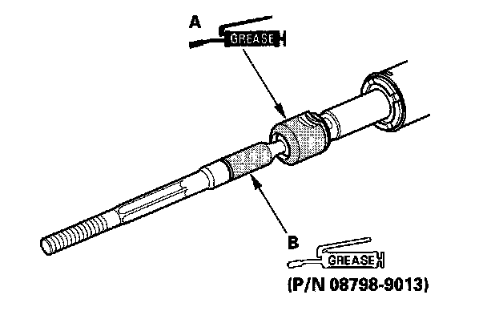

Overhaul
Steering Gearbox OverhaulSteering Gear Box:
Special Tools Required
^ Driver handle, 480 mm 070GD-0010100
^ Driver 07749-0010000
^ Attachment, 42 x 47 mm 07746-0010300
^ Driver head 07946-MJ00201
^ Piston seal ring guide 07LAG-SM40100
^ Piston seal ring sizing tool 07LAG-SM40200
^ Pincer Oetiker 1098, or equivalent, commercially available
NOTE: Refer to the Exploded View as needed during the following procedure.
Removal
1. Remove the steering gearbox.
Disassembly
2. Remove the boot bands (A) and tie-rod clips (B). Pull the boots away from the ends of the steering gearbox.
3. Unbend the lock washer (A).
4. Hold the flat surface sections (A) of the steering rack (B) with a wrench, and unscrew both rack ends (C) with a wrench. Be careful not to damage the rack surface with the wrench.
5. Remove the lock washer (D) and stop washer (E).
6. Loosen the locknut (A) then remove the rack guide screw (B).
7. Remove the spring (C) and the rack guide (D) from the gearbox housing.
8. Remove the cylinder lines from the steering gearbox.
NOTE: Use a second wrench when loosening the cylinder lines to avoid damage to the fittings on the steering gearbox. Do not loosen the A and B connectors.
9. Remove the damper valves (C) and O-rings (D) from the steering gearbox.
NOTE: Do not loosen the A and B connectors.
10. Drain the fluid from the cylinder fittings by slowly moving the steering rack back and forth.
11. Remove the end plug (A) from the gearbox housing, then remove the nut (B) from the pinion shaft end.

12. Loosen the 16 mm flare nut (A) and remove the return line joint (B).
13. Remove the two flange bolts, the valve body unit (A) and gasket (B) from the steering gearbox. Check that the valve turns smoothly by turning the pinion shaft. If any play or roughness is felt, replace the valve body unit with a new part. Do not try to disassemble the valve body unit.
14. Slide the steering rack all the way towards the valve body end of the gearbox housing.
15. Turn the rack stop (A) counterclockwise until the end (B) of the circlip (C) sticks out from the hole (D) in the cylinder housing. Then turn it clockwise to remove the circlip.
16. Remove the rack stop (A) rack bushing (B) and steering rack (C) from the steering gearbox.
17. Remove the O-ring (A) and cylinder end seal (B) from the rack bushing (C).
18. Carefully pry the piston seal ring (A) and O-ring (B) off the rack piston. Be careful not to damage the inside of the seal ring groove and piston edges when removing the seal ring.
19. Insert the driver handle and driver head, and carefully place them on the cylinder end seal (A) as shown. Make sure that the driver head is securely positioned on the cylinder end seal.
20. Install the bearing separator (B) on the gearbox housing. Set the steering gearbox in a press so the gearbox housing points upward, then push out the cylinder end seal by pressing on the end of the driver handle and driver head.
21. Remove the steering gearbox from the press, and set a driver extension (A) on the driver handle. Place the steering gearbox in a press, then remove the cylinder end seal (B) from the gearbox housing by pressing on the end of the extension.
Note these items when pressing the cylinder end seal:
^ Keep the tool straight to avoid damaging the cylinder wall. Check the tool angle, and correct it if necessary, when removing the cylinder end seal.
^ Use a press to remove the cylinder end seal. Do not try to remove the seal by striking the tool; striking the tool would break the cylinder end seal, and the seal would remain in the gearbox.
Reassembly
22. Coat the piston seal ring guide with power steering fluid, then slide it onto the rack, big end first.
23. Position the new O-ring (A) and new piston seal ring (B) on the ring guide, then slide them down toward the big end of the tool.
Note these items during reassembly:
^ Do not over expand the resin seal rings. Install the resin seal rings with care so as not to damage them. After installation, make sure you contract the seal ring using the sizing tool.
^ Replace the piston's O-ring and seal ring as a set.
24. Pull the O-ring off into the piston groove, then pull the piston seal ring off into the piston groove on top of the O-ring.
25. Coat the piston seal ring (A) and the inside of the piston seal ring sizing tool with power steering fluid, then carefully slide the tool onto the rack and over the piston seal ring.
26. Move the sizing tool back and forth several times to make sure the piston seal ring fits snugly in the piston.
27. Wrap vinyl tape around the rack teeth and rack end edges, then coat the surface of the tape with power steering fluid. Make sure that the vinyl tape is wrapped carefully so that there is no stepped portion.
28. Coat the inside surface of the new cylinder end seal (A) with power steering fluid, then install it onto the steering rack with its grooved side toward the piston. When installing the cylinder end seal, be careful not to damage the lip of the seal with the edges or teeth of the steering rack.
29. Remove the vinyl tape from the steering rack, then remove any adhesive residue.
30. Apply multipurpose grease to the steering rack teeth, then insert the steering rack into the gearbox housing. Be careful not to damage the inner surface of the cylinder wall with the rack edges.
31. Insert an appropriate sized deep socket (A) onto the steering rack as shown.
32. Install the cylinder end seal (B) into the bottom of the cylinder by pressing on the tool with a press. Do not push on the tool with excessive force as it may damage the cylinder end seal.
33. Remove the tool, and center the steering rack.
34. Wrap vinyl tape around the rack end edges, and coat the surface of the tape with power steering fluid. Make sure that the vinyl tape is wrapped carefully so that there is no stepped portion.
35. Coat the inside surface of the new cylinder end seal (A) with power steering fluid, then press it into the rack bushing (B) using the driver and attachment.
36. Coat the new O-ring (C) with power steering fluid, and carefully fit it in the groove of the rack bushing.
37. Install the rack bushing onto the steering rack with the cylinder end seal grooved side toward the piston. Push in the rack bushing with your finger.
38. Remove the vinyl tape from the steering rack, then remove any adhesive residue.
39. Install the rack stop (A) onto the steering rack so the hole (B) is aligned with the slot (C) on the cylinder housing.
40. Insert the end of the circlip (A) into the hole (B) of the rack stop (C). Turn the rack stop counterclockwise until the circlip is fully seated in the rack stop.
41. Apply multipurpose grease to the bearings (A) in the gearbox housing, and install the valve body unit (B) and new gasket (C) by engaging the gears. Note the valve body unit installation position (direction of line connections). Then loosely install the two flange bolts.
42. Install the new self-locking nut (A) onto the pinion shaft end, and tighten to the specified torque.
43. Tighten the flange bolts to the specified torque.
44. Apply new sealant (Loctite 565) all the way around the threads on the end plug (B) install the end plug onto the gearbox housing, and tighten it to the specified torque.
45. After tightening, use a drift to stake (A) the end plug shoulder against the gearbox housing.
46. Install the return line joint (A) and tighten the 16 mm flare nut (B).

47. Coat the new O-rings (A) with power steering fluid, then install the damper valves (B).
48. Install the damper valve to the steering gearbox.
49. Before installing the cylinder lines, coat the new O-rings with power steering fluid, then install the lines.
Note these items during reassembly:
^ Thoroughly clean the joints of the cylinder lines. The joints must be free of foreign material.
^ Install the cylinder lines by tightening the flare nuts by hand first, then tighten the flare nuts to the specified torque.
NOTE: Use a second wrench when tightening the cylinder lines to avoid damaging the fittings on the steering gearbox.
50. Apply multipurpose grease to the sliding surface of the rack guide (A) and install it onto the gearbox housing.
51. Apply new sealant (Loctite 565) to the middle of the threads of the rack guide screw (B) then install the spring (C) rack guide screw, and locknut (D).
52. Adjust the rack guide screw. After adjusting, check that the rack moves smoothly by sliding it right and left.
53. Install the new stop washer (A) and lock washer (B). Align the lock washer tabs (C) with the slots (D). Install the rack end (E) while holding the lock washer in place. Repeat this step for the other side of the rack.
54. Hold the flat surface sections of the steering rack with a wrench, and tighten both rack ends. Be careful not to damage the rack surface with the wrench.
55. Bend the lock washer (A) back against the flat spots on the rack end joint housing.
56. Apply multipurpose grease to the circumference of the rack end joint housing (A).

57. Apply a light coat of silicone grease to the boot grooves (B) on the rack ends.
58. Center the steering rack within its stroke.
59. Clean off any grease or contamination from the boot installation surfaces (A) on the gearbox housing. Install the boots (B) on the rack ends with the tie-rod clips (C) and fit the boot end on the housing properly.
60. After installing the boots, wipe the grease off the threaded section (D) of the rack end.
61. Install the new boot bands by aligning the tabs (A) with the holes (B) of the band.
62. Close the ear portion (A) of the band with a commercially available Oetiker 1098 pincer or equivalent (B).
63. Slide the rack right and left to be certain that the boots are not deformed or twisted.